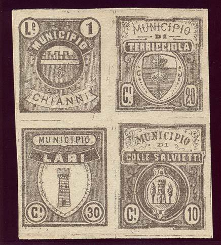
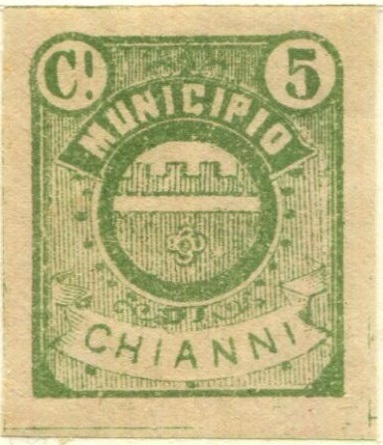
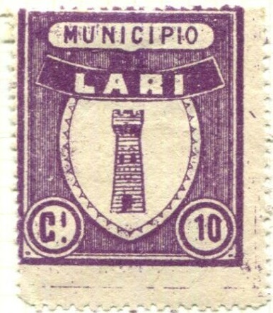

{kind=link}
{kind=link}


Altamura
Return To Catalogue - Italy fiscal stamps, municipal stamps, part 1 - Italy fiscal stamps, municipal stamps, part 3, stamps that were actually used - Italy overview
Note: on my website many of the
pictures can not be seen! They are of course present in the
catalogue;
contact me if you want to purchase the catalogue.
There are many local fiscal stamps of Italy, even the famous
Forbin catalogue does not list them, but mentions that in 1915
there were already 7000 to 8000 different local fiscal stamps in
Italy. A book seems to exist on this subject (I haven't seen it
myself): 'Italian Municipals' by J.B. Moens (1892), it has been
reprinted by Barata in 1994 (80 pages). see also
http://www.italianmunicipalstamps.alexkemura.co.uk/
Apparently, the printers Smorti and Pineider from Florence
printed large amounts of these stamps with no townname but blank
center (in which they could later insert arms or other imagery)
which they tried to sell to towns and villages, most of these
stamps were later sold for collector's purposes only. According
to Gerhard Lang, the Smorti-project was actually driven by Usigli
and de Torres (with Bonasi as well being involved?), he says 40
cities were targeted (while Diena states only 18).
For these 'swindle' issues of the Italian municipal stamps, click here

 
The 'real' stamps for Chianni and Lari?
Altamura

Altavilla Silentina

Andria

Brescello
"MUNICIPIO DI BUCINE": I've also seen the values 5 c
black, 50 c red and 1 L yellow

Calamonaci, the values 20 c, 30 c and 50 c were issued; all in
black on colored paper.

CITTA DI CASERTA
MUNICIPO DI CAMPOFIORITO

Fabriano
"MUNICIPIO DI FERMO"
"MUNICIPIO DI LIVORNO": I've also seen a 20 c blue in
the same design
("MUNICIPIO DI Monteroberto", I've also seen a 4 L
brown in the same design)
"DIRITTI URGENZA MUNICIPIO DI PALERMO"

Scarperia

"MUNICIPIO DI VINCI"
Italy fiscal stamps, municipal stamps, part 3, stamps that were actually used
Stamps - Francobolli - Briefmarken - Timbres-Poste